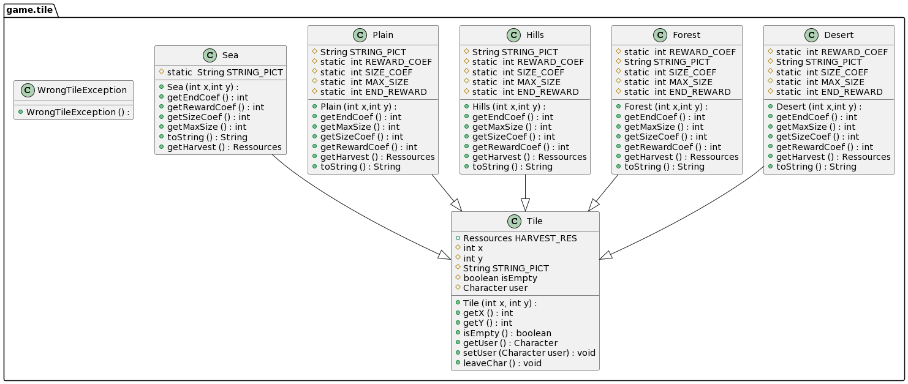
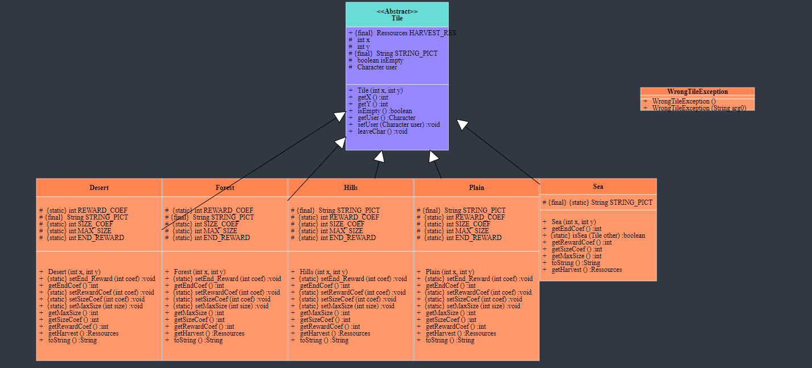

Test
Cette page est dediée aux tests de notre extention. Il y a deux types de tests , les tests unitaires, et les tests terrains.
Sommaire
- Tests Unitaires
- Tests terrains
Testes unitaires
Les tests unitaires sont dans le dossier java/object. Ils permettent de tester le bon fonctionnement des composantes du langage Java.
Les tests sont codés dans les fonctions main de chaque fichier, ils lancent la generation sur une portion de code, et verifient que le retour de la classe a tester est correct. Ces tests servent uniquement pour s'assurer du bon fonctionnement de la generation de l'UML, ce qui est bien entendu très important. Pour lancer les tests unitaires, il suffit de lancer les differents fichiers dans un shell. Ils sont aussi executés sur GitLab, avec la technique du Developpement Continue. Les fichiers qui sont testés sont :
On peut donc visualiser en direct sur notre dépôt GitLab que la pipeline est passed ce qui signifie que les tests sont fonctionnels sans erreurs.Tests terrains
Les Tests Terrains ont été executés sur beaucoup de projets Java de nos precedents projets de fac. On a ainsi comparé a un UML deja existant , en verifiant a chaque fois que les UMLs generés et ceux existants sont similaires. Pour illustrer les tests terrains, nous avons créer un dossier Tests_Terrains disponible dans le dépôt qui montre deux générations d'UML différente sur un Projet en particulier (L2S4 Projet) :
- 'uml-manuel...' qui représente les UMLs que nous avons générer à la main pour le Projet de S4 l'année passée
- 'py_uml...' qui représente les UMLs auto générés par notre extension VSCode
En plus de refaire l'UML automatiquement et directement en séléctionnant le dossier de chaque packages et du projet total dans l'IDE VSCode, nous avons la possibilité de gérer la disposition des classes comme nous l'avons souhaité.

Or, concernant l'UML autogénéré par l'extension, l'image a été sauvegardé sous un format dynamique, ce qui fait qu'il est toujours possible de zoomer afin d'isoler des classes et la qualité s'ajuste automatiquement afin que les textes soit clairs et visibles.
Enfin, voici un exemple pour comparer les résultats sur un même package (game.tile) :
- Version Manuelle : 
- Version Extension Autogénérée : 